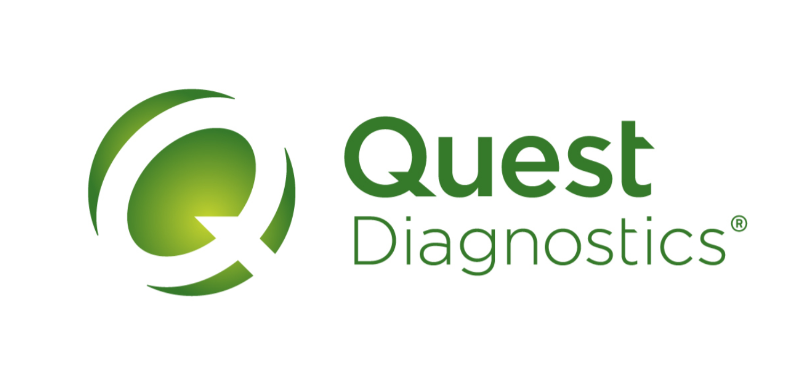
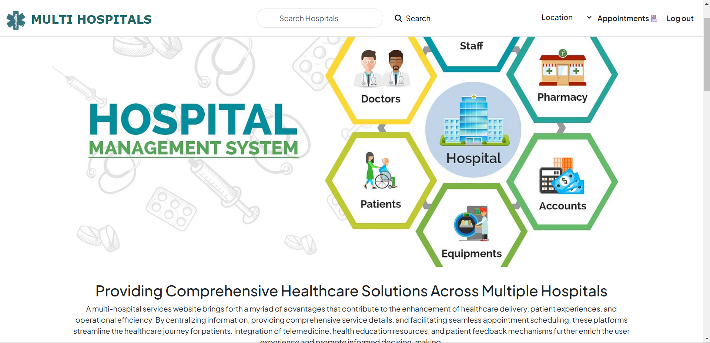
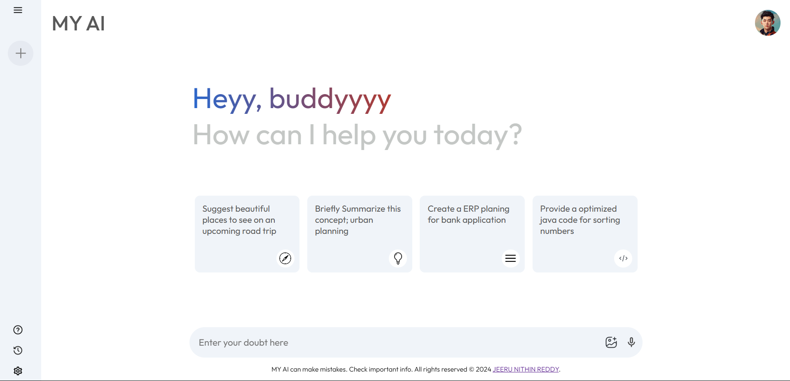
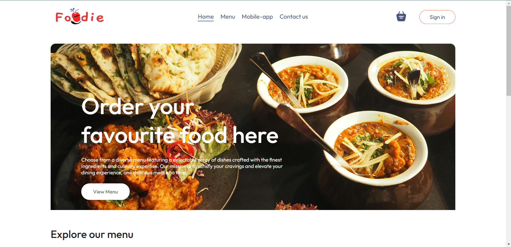
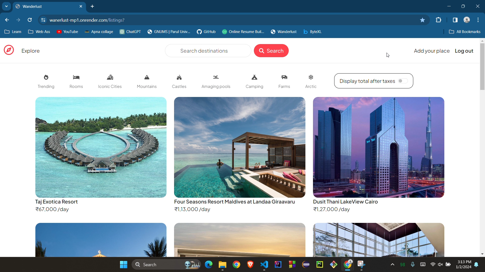

HCL CLIENT PROJECT - CURRENTLY WORKING

QUEST DIAGNOSTICS - QA AUTOMATION
Client: Quest Diagnostics
Role: QA Test Engineer @ HCL Technologies
Leading testing efforts for the Quest Diagnostics healthcare platform. Implementing
end-to-end automation using WebdriverIO (WDIO) with TypeScript and
Cucumber BDD for maintainable, behavior-driven test scenarios. Managing test cases and
defects in JIRA while performing functional, regression, API, and cross-browser
testing. Ensuring HIPAA compliance, data security validation, and collaborating
with Agile teams to support continuous delivery.

MULTI-HOSPITAL MANAGEMENT SYSTEM
A comprehensive full-stack web application designed to streamline operations across multiple hospital
facilities.
Built with React.js frontend and Node.js/Express backend, featuring real-time appointment scheduling, patient
record management,
and inter-hospital resource coordination. Implements role-based access control for doctors, patients, and
administrators.
Utilizes MongoDB for efficient data management and includes features like automated notifications and
analytics dashboards.
View
Project →

MY-AI CHATBOT
An intelligent, AI-powered conversational chatbot built with React.js, featuring a modern, responsive UI
similar to ChatGPT.
Integrates with OpenAI API to deliver context-aware, human-like responses in real-time. Implements
conversation history,
markdown rendering for code snippets, and typing indicators. Features include dark/light theme toggle,
conversation management,
and optimized API calls for cost efficiency. Demonstrates proficiency in API integration and state management.
View Project →

FOODIE-FLEET
A feature-rich food delivery platform developed using React.js with Redux for state management. Implements
real-time order tracking,
dynamic menu filtering, shopping cart functionality, and secure payment gateway integration. Features include
restaurant search with
geolocation, user authentication, order history, and rating system. Optimized for performance with lazy
loading and code splitting.
Responsive design ensures seamless experience across all devices.
View Project
→

WANDERLUST
A full-stack travel booking platform built with Node.js, Express.js, and MongoDB. Features comprehensive
property listings with
image uploads, advanced search and filtering, user authentication with Passport.js, and booking management
system. Implements
MVC architecture, RESTful API design, and includes features like reviews/ratings, favorites, and interactive
maps using Mapbox.
Deployed on cloud platform with CI/CD pipeline for automated deployments.
View Project
→

WEATHER FORECAST APP
A dynamic weather application built with React.js that provides real-time weather data for any location
worldwide.
Integrates with OpenWeatherMap API to fetch current conditions, 5-day forecasts, and weather alerts. Features
include
geolocation support, city search with autocomplete, temperature unit conversion, and weather visualization
with icons.
Implements error handling, loading states, and local storage for favorite locations. Fully responsive with
smooth animations.
View Project
→